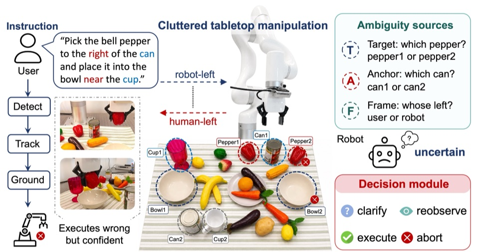
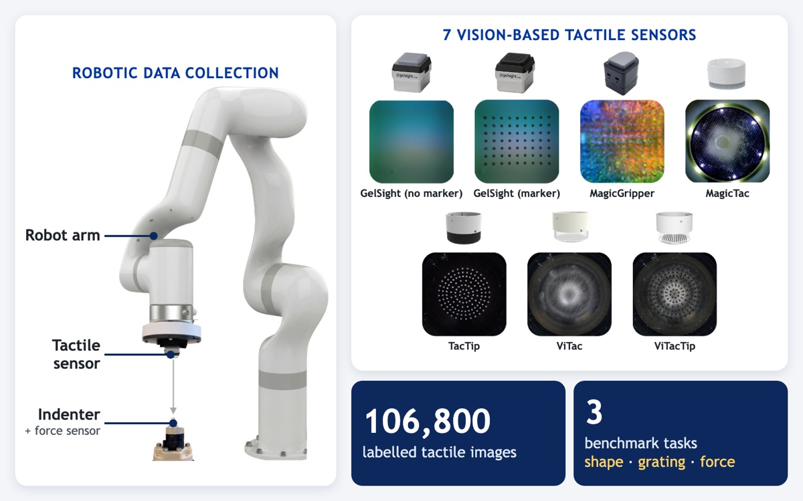
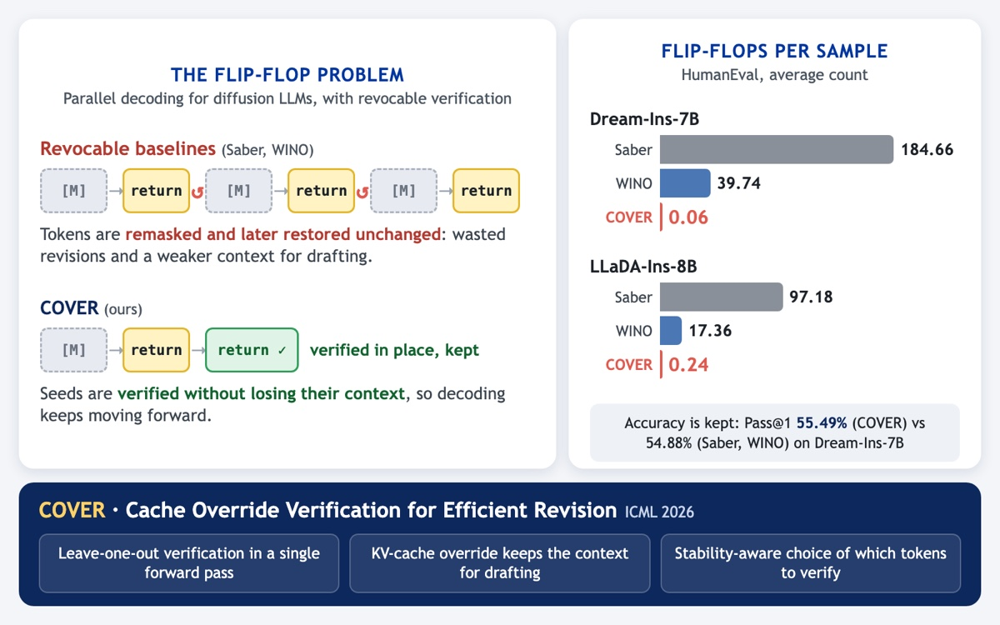
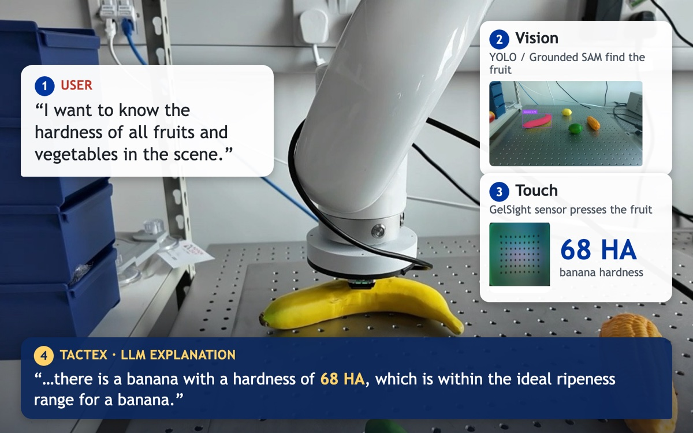
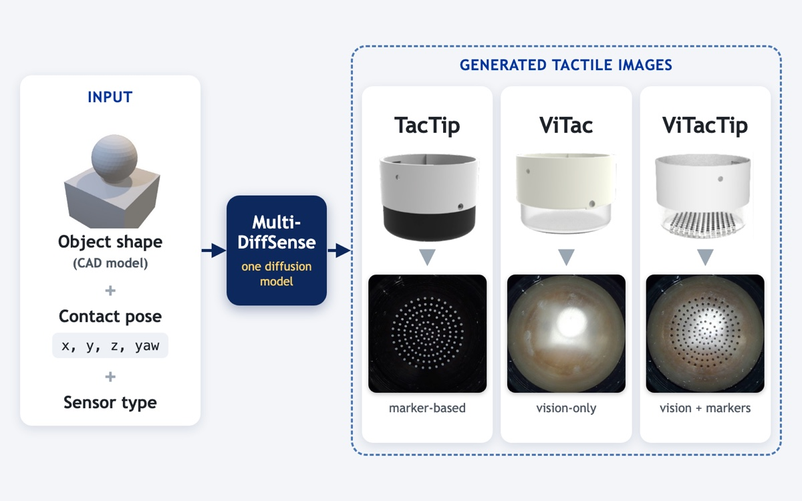
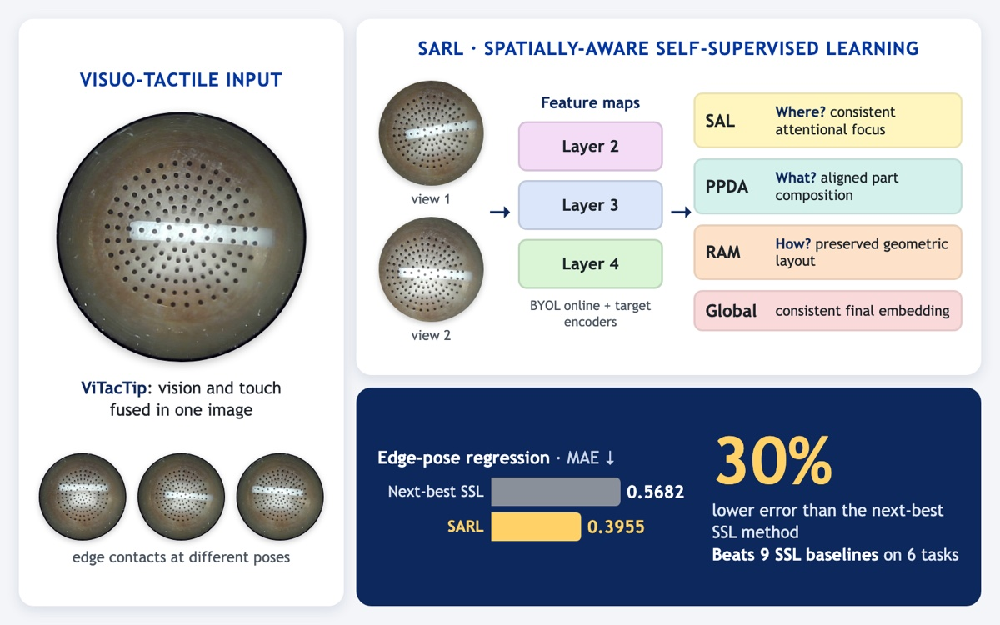
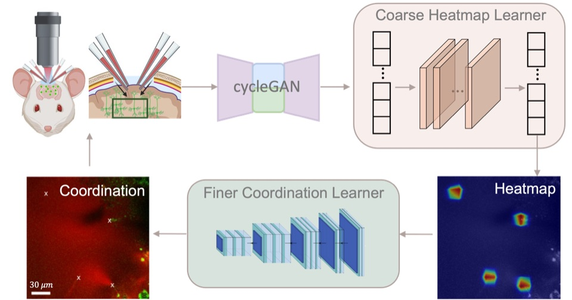
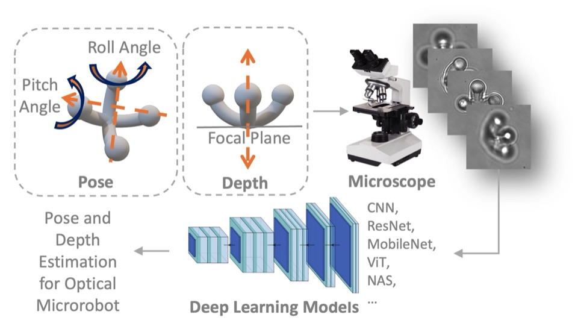

👋About Me
I am a PhD student in Robotics at Imperial College London, advised by Dr Dandan Zhang. I work on embodied AI: building robots that combine vision, touch and language to perceive, reason and act in the physical world.

My research spans vision-language-action models and multimodal-LLM agents for manipulation, visuo-tactile representation learning, and diffusion-based generative models, deployed on real robots from cluttered tabletop scenes to automated laboratory experiments and optical microrobots. I also co-organise workshops on world models for embodied AI at ECCV and IROS.
Before Imperial, I received my M.Eng. in Computer Science and Technology from the University of Science and Technology of China (USTC), working on physics-informed graph neural networks, and my B.Eng. from Xiamen University.
🔥News
- 2026.09: New preprint RefGuard on identity-aware, language-guided robot manipulation in cluttered scenes. [arXiv] [Project]
- 2026.09: Co-organised two workshops on safe and physical world models for embodied AI at ECCV 2026 and IROS 2026. Thanks to all organisers, speakers and participants!
- 2026.09: Our work on safe and trustworthy robotic manipulation with constrained multimodal LLMs was selected for an oral presentation at the IROS 2026 PWMS Workshop.
- 2026.09: TacVerse, our cross-sensor tactile dataset and benchmark, was accepted to Advanced Robotics Research. [Paper] [Data] [Code] [Website]
- 2026.06: Three papers accepted to IROS 2026. Thanks to all collaborators!
- 2026.05: Our paper on fast revocable diffusion decoding was accepted to ICML 2026 (acceptance rate 26.6%). [arXiv]
- 2026.04: Two papers accepted to MARSS 2026, one of which was selected as a Best Paper Award Finalist.
- 2026.03: Honoured to receive the 2026 Early Career Development Grant from the Imperial I-X Women in AI Network.
- 2026.01: Four papers with the Master's students I co-supervise were accepted to ICRA 2026. Congratulations to them!
- 2025.08: Received the IROS 2025 IEEE RAS Travel Support Award (USD 1,500).
- 2025.08: Our paper on physics-informed optical microrobot depth estimation was accepted to IEEE CBS 2025 and selected as a Best Bionic System Award Finalist. [arXiv]
- 2025.07: Our optical microrobot pose and depth perception paper won the Best Student Paper Award (highest score) at MARSS 2025!
- 2025.06: Our paper on multi-pipette localisation for robot-assisted patch-clamp was accepted to IROS 2025. [arXiv]
- 2025.04: Our optical microrobot dataset and benchmarks paper was accepted to MARSS 2025. [arXiv] [Project]
- 2024.10: Joined Imperial College London as a fully funded PhD student in Robotics.
- 2024.07: Graduated from USTC with an M.Eng. in Computer Science and Technology.
🤖Research Highlights
- Robot foundation models and multimodal-LLM agents. Grounding language in perception for safe, reliable manipulation: VLA post-training on robot demonstrations, ambiguity-aware language-guided manipulation, constrained multimodal-LLM agents that respect physical limits, and LLM-based scheduling for multi-robot teams. [RefGuard] [ICRA26] [MARSS26] [IROS26 WS] [Multi-robot]
- Visuo-tactile perception and representation learning. Treating touch as a first-class modality for robot learning: a cross-sensor tactile dataset and benchmark, self-supervised visuo-tactile representations, few-shot adaptation to unseen sensors, and LLM-driven architecture search for tactile models. [ARR26] [ICRA26] [IROS26] [BIFTA]
- Robotics for science: lab automation and microrobots. Perception and control for automating physical experiments: multi-pipette localisation for robot-assisted in vivo patch-clamp, pose and depth estimation of optical microrobots, sim-to-real data generation, and shared-control and digital-twin teleoperation for micromanipulation. [IROS25] [MARSS25] [CBS25] [ICRA26] [MARSS26]
- Generative models and physics-informed learning. Diffusion models that synthesise tactile and microscopy data, faster and more stable diffusion-LLM decoding, efficient Vision Transformers, and physics-informed graph networks as learned simulators for fluids and Arctic sea ice. [ICML26] [ICRA26] [ICLR24] [JGR25] [TVC25]
📝Publications
(* Equal contribution, † Corresponding author.) Full list also on Google Scholar.
Selected Publications

RefGuard: Identity-Aware Language-Guided Robot Manipulation via Joint Target-Anchor-Frame Grounding
Lan Wei, Kangyi Lu, Yongchen Wang, Chenmeng Bi, Qi Chen, Yip Fun Yeung, Zhenguo Li, Hanlin Niu, Dandan Zhang
Under review
- Resolves which object, which reference object and whose “left” an instruction means in cluttered scenes, and lets the robot clarify, re-observe or abort instead of acting wrongly but confidently.

TacVerse: A Multi-Sensor Dataset and Benchmark for Cross-Sensor Vision-Based Tactile Perception
Lan Wei, Gurmeher Khurana, Sirine Bhouri, Wenhao Hong, Zeyuan Xin, Qingzheng Cong, Wen Fan, Yanzheng Xiang, Dandan Zhang
Advanced Robotics Research, 2026
- A dataset covering seven vision-based tactile sensor configurations (GelSight, MagicTac, TacTip, ViTac and more), with benchmarks for transferring tactile perception across sensors.

Stop the Flip-Flop: Context-Preserving Verification for Fast Revocable Diffusion Decoding
Yanzheng Xiang*, Lan Wei*, Yizhen Yao, Qinglin Zhu, Hanqi Yan, Chen Jin, Philip Alexander Teare, Dandan Zhang, Lin Gui, Amrutha Saseendran, Yulan He
International Conference on Machine Learning (ICML), 2026
- Verifies drafted tokens with the cached context during parallel diffusion-LLM decoding, sharply cutting the remask-and-redo “flip-flops” that slow revocable decoding while keeping accuracy.
[arXiv]

TactEx: An Explainable Multimodal Robotic Interaction Framework for Human-Like Touch and Hardness Estimation
Felix Verstraete*, Lan Wei*, Wen Fan*, Dandan Zhang
IEEE International Conference on Robotics and Automation (ICRA), 2026
- Combines language-grounded visual detection, tactile hardness estimation and an LLM that explains what the robot feels, so users can ask a robot about object properties in plain language.
[arXiv]

MultiDiffSense: Diffusion-Based Multi-Modal Visuo-Tactile Image Generation Conditioned on Object Shape and Contact Pose
Sirine Bhouri*, Lan Wei*, Jian-Qing Zheng, Dandan Zhang
IEEE International Conference on Robotics and Automation (ICRA), 2026
- A ControlNet-conditioned diffusion model that generates realistic tactile images for several sensors from an object's CAD shape and its 4-DoF contact pose.

SARL: Spatially-Aware Self-Supervised Representation Learning for Visuo-Tactile Perception
Gurmeher Khurana*, Lan Wei*, Dandan Zhang
IEEE International Conference on Robotics and Automation (ICRA), 2026
- Self-supervised visuo-tactile representation learning with spatially-aware objectives that keep the geometric structure needed for contact-rich perception.
[arXiv]

Coarse-to-Fine Learning for Multi-Pipette Localization in Robot-Assisted In Vivo Patch-Clamp
Lan Wei, Gema Vera Gonzalez, Phatsimo Kgwarae, Alexander Timms, Denis Zahorovsky, Simon Schultz, Dandan Zhang
IEEE/RSJ International Conference on Intelligent Robots and Systems (IROS), 2025
- Localises multiple pipettes in in vivo microscopy with CycleGAN domain adaptation, a coarse heatmap stage and fine coordinate regression, a step towards automated patch-clamp experiments.

A Dataset and Benchmarks for Deep Learning-Based Optical Microrobot Pose and Depth Perception
Lan Wei, Dandan Zhang
IEEE International Conference on Manipulation, Automation and Robotics at Small Scales (MARSS), 2025 Best Student Paper Award
- An open dataset of optical microrobot microscopy images with benchmarks of CNN, ResNet, MobileNet, ViT and NAS models for pose and depth estimation.
All Publications
(* Equal contribution, † Corresponding author.)
Filter: · · · · ·
Under Review
PreprintRefGuard: Identity-Aware Language-Guided Robot Manipulation via Joint Target-Anchor-Frame Grounding.
Lan Wei, Kangyi Lu, Yongchen Wang, Chenmeng Bi, Qi Chen, Yip Fun Yeung, Zhenguo Li, Hanlin Niu, Dandan Zhang. [arXiv] [Project]PreprintDual-Control Frequency-Aware Diffusion Model for Depth-Dependent Optical Microrobot Microscopy Image Generation.
Lan Wei, Zongcai Tan, Kangyi Lu, Jian-Qing Zheng, Dandan Zhang. [arXiv]Under reviewState-Authority-Aware Scheduling with Multimodal LLMs for Perception-Grounded Multi-Robot Manipulation.
Liang Wang, Lan Wei†, Dandan Zhang.Under reviewBIFTA: Brain-Inspired Few-Shot Tactile Adaptation for Unknown Sensors.
Boheng Liu, Lan Wei, Chenghua Duan, Ziyu Li, Dandan Zhang, Xia Wu.
2026
ICML 2026Stop the Flip-Flop: Context-Preserving Verification for Fast Revocable Diffusion Decoding.
Yanzheng Xiang*, Lan Wei*, Yizhen Yao, Qinglin Zhu, Hanqi Yan, Chen Jin, Philip Alexander Teare, Dandan Zhang, Lin Gui, Amrutha Saseendran, Yulan He.ARR 2026TacVerse: A Multi-Sensor Dataset and Benchmark for Cross-Sensor Vision-Based Tactile Perception.
Lan Wei, Gurmeher Khurana, Sirine Bhouri, Wenhao Hong, Zeyuan Xin, Qingzheng Cong, Wen Fan, Yanzheng Xiang, Dandan Zhang. Advanced Robotics Research. [Paper] [Data] [Code]IROS 2026 WorkshopBridging Semantics and Physics with Constrained Multimodal LLMs for Safe and Trustworthy Robotic Manipulation.
Lan Wei, Wenhao Hong, Dandan Zhang. Workshop on Physical World Models for Scaling Embodied AI (PWMS). OralICRA 2026TactEx: An Explainable Multimodal Robotic Interaction Framework for Human-Like Touch and Hardness Estimation.
Felix Verstraete*, Lan Wei*, Wen Fan*, Dandan Zhang.ICRA 2026MultiDiffSense: Diffusion-Based Multi-Modal Visuo-Tactile Image Generation Conditioned on Object Shape and Contact Pose.
Sirine Bhouri*, Lan Wei*, Jian-Qing Zheng, Dandan Zhang. [Code]ICRA 2026SARL: Spatially-Aware Self-Supervised Representation Learning for Visuo-Tactile Perception.
Gurmeher Khurana*, Lan Wei*, Dandan Zhang.ICRA 2026Physics-Informed Machine Learning for Efficient Sim-to-Real Data Augmentation in Micro-Object Pose Estimation.
Zongcai Tan*, Lan Wei*, Dandan Zhang. [Code]IROS 2026TacEvo: Self-Evolving Architecture Discovery for Robotic Tactile Perception via LLM-Driven Quality-Diversity Search.
Mohammed AbuSadeh, Lan Wei†, Dandan Zhang. [Supp.]IROS 2026Surgi-HDTMR: Closing the Sensorimotor Loop in Bimanual Microsurgery via Haptics, Digital Twin, and Mixed Reality.
Songming Ping, Shaoyue Wen, Junhong Chen, Wen Fan, Lan Wei, Dandan Zhang.MARSS 2026Mag-VLA: Vision-Language-Action Model for Bimanual Magnetically Actuated Microrobot Manipulation.
Yongchen Wang, Kangyi Lu, Lan Wei, Dandan Zhang.MARSS 2026A Digital Twin Framework for Virtual Visuo-Haptic Teleoperation of Complex-Shaped Optical Microrobots.
Zongcai Tan, Lan Wei, Dandan Zhang. Best Paper Award FinalistCBS 2026Embodied Cross-Domain Intelligence in Biomedical Microrobots: A Review.
Zongcai Tan, Lan Wei, Kangyi Lu, Dandan Zhang. Cyborg and Bionic Systems.
2025
IROS 2025Coarse-to-Fine Learning for Multi-Pipette Localization in Robot-Assisted In Vivo Patch-Clamp.
Lan Wei, Gema Vera Gonzalez, Phatsimo Kgwarae, Alexander Timms, Denis Zahorovsky, Simon Schultz, Dandan Zhang. [arXiv] [Code] [Video]CBS 2025Physics-Informed Machine Learning with Adaptive Grids for Optical Microrobot Depth Estimation.
Lan Wei, Lou Genoud, Dandan Zhang. Best Bionic System Award Finalist [Code]MARSS 2025A Dataset and Benchmarks for Deep Learning-Based Optical Microrobot Pose and Depth Perception.
Lan Wei, Dandan Zhang. Best Student Paper Award [arXiv] [Code]JGR 2025Arctic Sea Ice Prediction Based on Multi-scale Graph Modeling with Conservation Laws.
Lan Wei, Nikolaos M. Freris. Journal of Geophysical Research: Atmospheres. [Code]TVC 2025Multi-Scale Graph Neural Network for Physics-Informed Fluid Simulation.
Lan Wei, Nikolaos M. Freris. The Visual Computer. [Code]
2024 and Earlier
ICLR 2024Synergistic Patch Pruning for Vision Transformer: Unifying Intra- & Inter-Layer Patch Importance.
Yuyao Zhang, Lan Wei, Nikolaos M. Freris. [Code]MICCAI 2021Boundary-Aware Transformers for Skin Lesion Segmentation.
Jiacheng Wang*, Lan Wei*, Liansheng Wang, Qichao Zhou, Lei Zhu, Jing Qin. (290+ citations) [Code]JFE 2021A Statistical Approach in Enhancing the Volume Prediction of Ellipsoidal Ham.
Y. S. Gan, Lan Wei, Yiming Han, Chenyu Zhang, Yen-Chang Huang, Sze-Teng Liong. Journal of Food Engineering.
No publications in this category.
📖Education
- 2024.10 - Present, PhD in Robotics, Imperial College London. Advisor: Dr Dandan Zhang.
- 2021.09 - 2024.06, M.Eng. in Computer Science and Technology, University of Science and Technology of China. Advisor: Prof. Nikolaos M. Freris. Thesis: Physics-Informed Multi-layer Graph Neural Networks for Fluid Simulation and Prediction.
- 2017.09 - 2021.06, B.Eng. in Computer Science and Technology, Xiamen University. GPA 3.86/4.0, ranked 3/61. Thesis published at MICCAI 2021.
💬Service and Teaching
- Workshop organiser
- Safe World Models for Trustworthy Embodied AI, ECCV 2026, Malmö, Sweden.
- Physical World Models for Scaling Embodied AI, IROS 2026, Pittsburgh, USA.
- AI for Science and Lab Automation, Imperial College London, 2026.
- Trustworthy Embodied Intelligence, Imperial I-X Symposium, London, 2025.
- Reviewer: ICRA 2027, NeurIPS 2026, ECCV 2026, CoRL 2026, IROS 2026.
- Mentoring: Co-supervised 10 MRes / MSc students at Imperial (2025–2026), four of whose projects became ICRA 2026 papers.
- Teaching Assistant: Deep Learning, Imperial College London (2024–2026); Optimization Theory (2023) and Queuing Theory (2022), USTC.
- Talks
- 2025.07, Machine learning-based perception of optical microrobots, oral, Trustworthy Embodied Intelligence Symposium, London.
- 2025.03, Sensors and actuators for biomedical robotics, invited talk, Department of Bioengineering, Imperial College London.
🎖Honors and Awards
- 2026, Best Poster Runner-up, Computational Biology Symposium, The Francis Crick Institute.
- 2026, Best Paper Award Finalist, MARSS 2026.
- 2026, Early Career Development Grant, Imperial I-X Women in AI Network.
- 2025, Best Student Paper Award (highest score), MARSS 2025.
- 2025, Best Bionic System Award Finalist, IEEE CBS 2025.
- 2025, IEEE RAS Travel Support, IROS 2025 (USD 1,500).
- 2025, Patent: Arctic sea ice prediction based on multi-scale graph neural networks and conservation laws (CN119476634B), with N. M. Freris.
- 2024, Fully funded four-year PhD scholarship, Imperial College London.
- 2021 - 2024, First-class Scholarship, USTC.
- 2021, National First Prize, 11th China Adolescents Science and Technology Innovation Contest.
- 2019 - 2020, First-class Scholarship (top 3%), Xiamen University.
- 2018, Highest score in Malaysia, Simon Marais Asia-Pacific Mathematics Competition.
📫Contact
- Email: l.wei24@imperial.ac.uk
- Address: Translation & Innovation Hub (I-HUB), White City Campus, Imperial College London, W12 0BZ
Last updated: November 2026